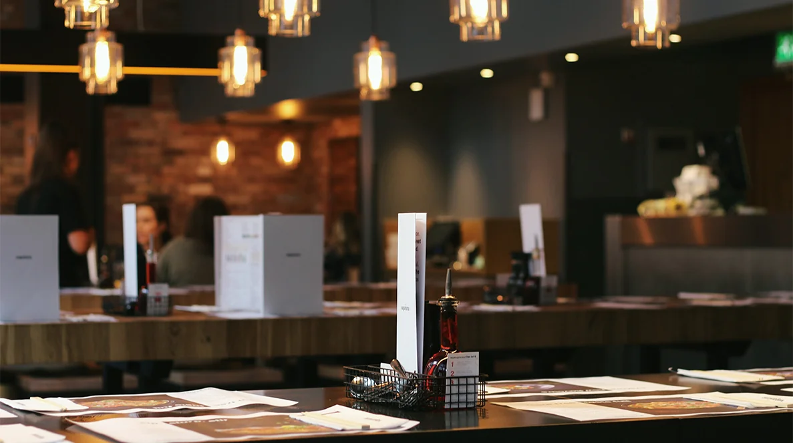

新橋料亭お江戸
東京新橋で
二百年続く老舗料亭


繊細な
日本料理に
舌鼓を打つ
すき焼き、天ぷら、寿司。伝統的な日本料理を私たちは二百年前から、こだわりを持って作り続けています。
東京新橋の片隅にある日本家屋で、こだわりの料理に舌鼓を打ちながら、どうぞごゆっくりお過ごしください。
お品書き

東京新橋で
二百年続く老舗料亭
すき焼き、天ぷら、寿司。伝統的な日本料理を私たちは二百年前から、こだわりを持って作り続けています。
東京新橋の片隅にある日本家屋で、こだわりの料理に舌鼓を打ちながら、どうぞごゆっくりお過ごしください。